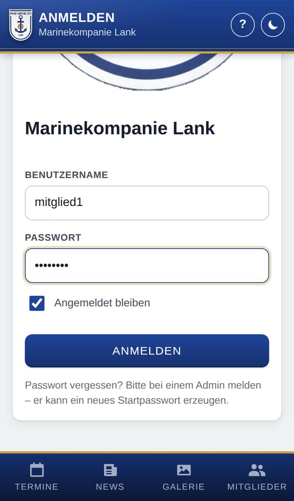
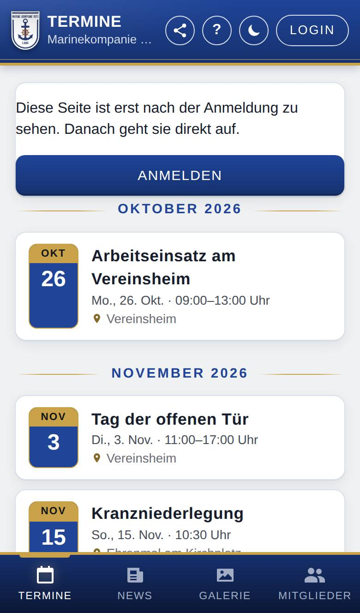

Anmelden
Mit der Anmeldung siehst du außer dem Öffentlichen auch deine eigenen Daten und alles, was nur für Mitglied bestimmt ist. Benutzername und Passwort bekommst du von der Marinekompanie Lank.

So öffnest du die Seite
Tippe oben rechts auf Login. Läuft die App über die Webseite der Marinekompanie Lank (WordPress), öffnet sich stattdessen die Anmeldeseite der Webseite; melde dich dort an.
Was du hier siehst
- Benutzername: dein Benutzername. Du kannst auch deine E-Mail-Adresse eingeben, wenn sie bei deinem Konto eingetragen ist.
- Passwort: dein Passwort.
- Angemeldet bleiben: ist vorausgewählt. Dann bleibst du auf diesem Gerät angemeldet, auch wenn du den Browser schließt.
- Anmelden: meldet dich an.
So gehst du vor
Dich anmelden
- Tippe oben rechts auf Login.
- Trage deinen Benutzername (oder deine E-Mail-Adresse) und dein Passwort ein.
- Lass Angemeldet bleiben angehakt, wenn es dein eigenes Gerät ist. Auf einem fremden Gerät nimmst du den Haken weg.
- Tippe auf Anmelden.
Danach öffnet sich die App neu, oben steht ein Gruß mit deinem Namen, und unten erscheint Meins.
Einen geteilten Link öffnen
Hat dir jemand einen Link auf einen Bildschirm geschickt, der nur für Angemeldete ist, steht dort „Diese Seite ist erst nach der Anmeldung zu sehen. Danach geht sie direkt auf.“
- Tippe auf Anmelden.
- Melde dich wie oben an.
- Die App öffnet danach den Bildschirm aus dem Link.

Gut zu wissen
- Mit Angemeldet bleiben bleibst du auf diesem Gerät rund ein Jahr angemeldet (400 Tage); wenn du die App zwischendurch nutzt, verlängert sich das von selbst. Ohne den Haken endet die Anmeldung, wenn du den Browser schließt, spätestens nach zwei Tagen. Das gilt für die Anmeldung in der App; mit der Anmeldeseite der Webseite gelten deren Regeln.
- Nach mehreren falschen Versuchen sperrt die App die Anmeldung für eine Weile. Dann steht dort „Zu viele Fehlversuche. Bitte in 15 Minuten erneut versuchen.“
- Passwort vergessen? Ein Admin der Marinekompanie Lank (oder wer Mitglieder anlegen darf) kann dir ein neues Startpasswort geben.
- Ist dein Konto nicht mehr aktiv, meldet die App „Dieses Konto ist nicht mehr aktiv. Bitte wende dich an die Kompanie.“
- Abmelden und dein Passwort ändern kannst du unter Mein Konto.